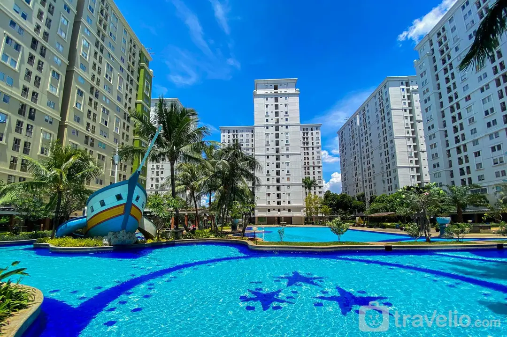
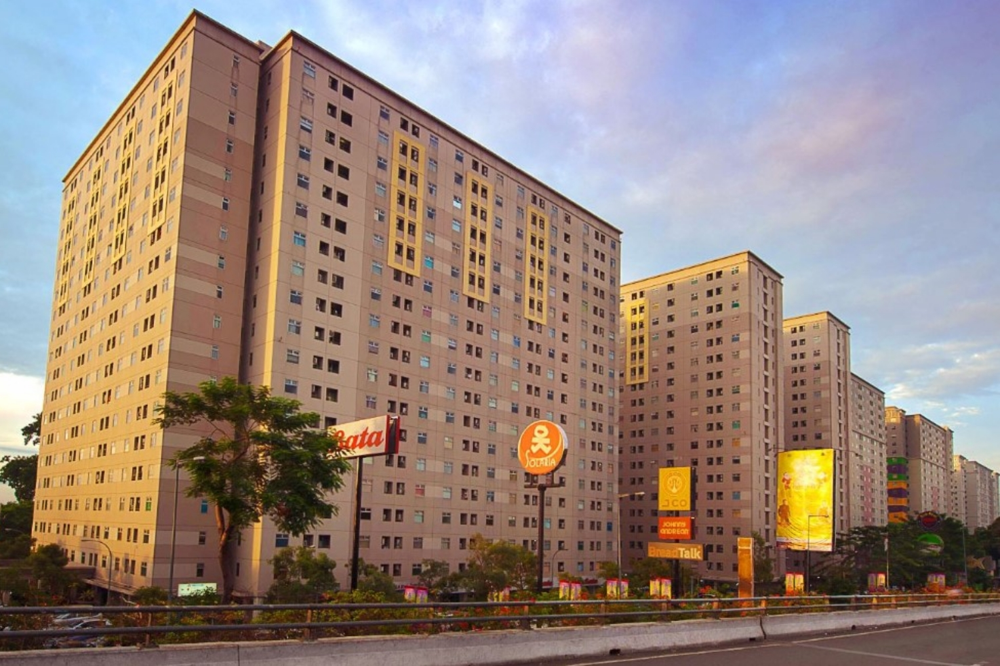
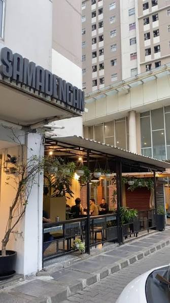

Sewa apartemen
Jelajahi pilihan hunian untuk kebutuhan tinggal Anda.
Listing segera hadirKALIBATA CITY · JAKARTA SELATAN
Dari hunian pilihan hingga sudut favorit untuk menikmati kopi. Jelajahi kehidupan di sekitar Kalibata City.
Hunian / Kopi & kuliner / Kehidupan kota

PROPERTI ✳ CAFÉ ✳ KOMUNITAS ✳ KALIBATA CITY
01 / TEMUKAN HUNIANMU
Apartemen untuk disewa atau dimiliki.
Pilih berdasarkan kebutuhan, lalu kenali setiap detailnya.

Jelajahi pilihan hunian untuk kebutuhan tinggal Anda.
Listing segera hadirKenali pilihan unit sebelum merencanakan kunjungan.
Listing segera hadirSiapkan foto, informasi unit, dan kontak yang bisa dihubungi.
Lihat kebutuhan listingKatalog sedang disiapkan. Informasi harga, ketersediaan, dan foto akan ditampilkan setelah data listing tersedia.

02 / SINGGAH SEJENAK
Secangkir kopi, obrolan santai, atau makan bersama. Kenali café dan tempat kuliner di sekitar hunian Anda.
Profil tempat, menu unggulan, jam buka, dan lokasi akan tersedia setelah informasi terverifikasi.
03 / KEHIDUPAN DI SEKITARMU
Mulai dari hunian yang sesuai dengan kebutuhan dan rutinitas.
Jadikan café dan kuliner bagian dari cerita bersama orang terdekat.
Temukan tempat dan usaha lokal di sekitar Kalibata City.
TUMBUH BERSAMA KAWASAN
Siapkan informasi berikut untuk ditampilkan di direktori Kalibata City.
Pendaftaran listing belum dibuka. Kontak pengelola akan ditampilkan di halaman ini setelah dikonfirmasi.